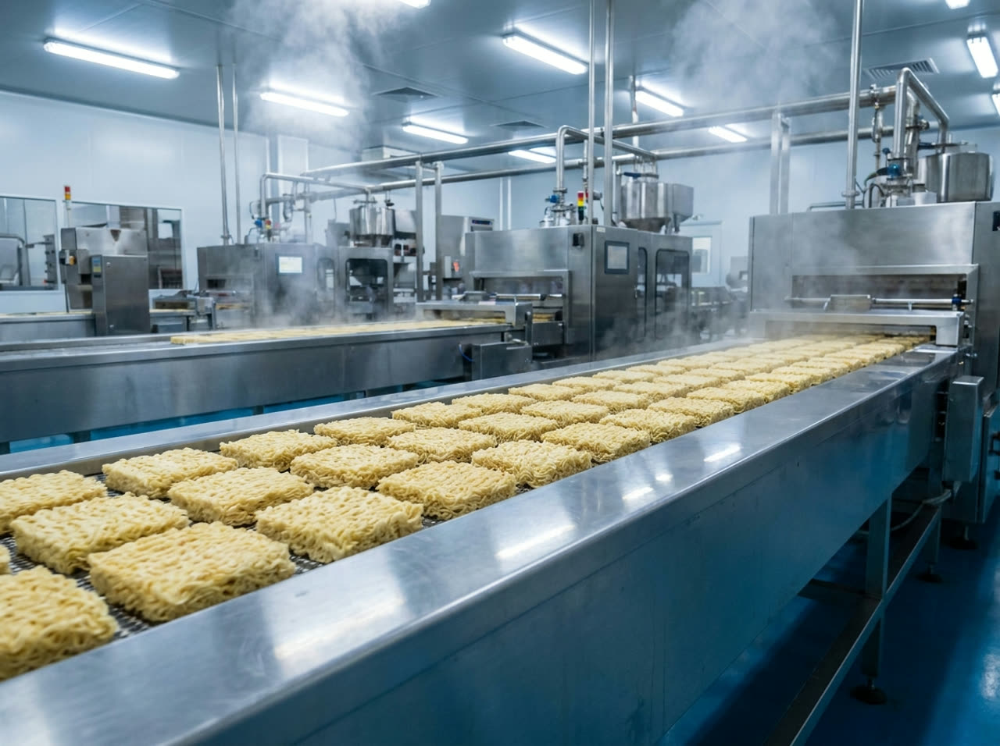
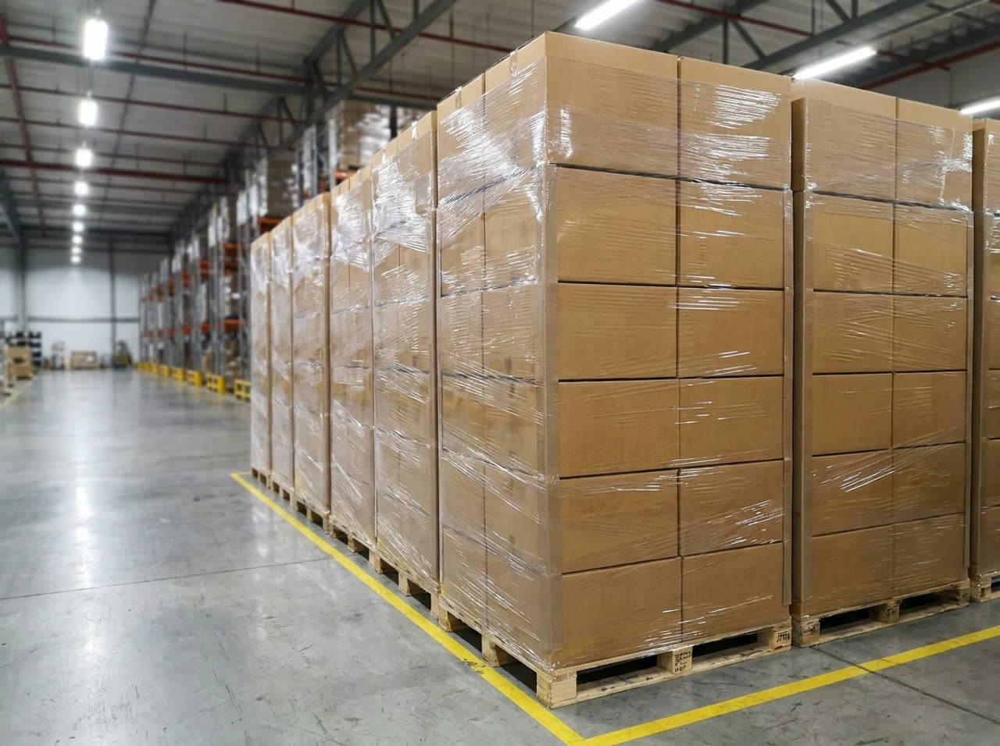
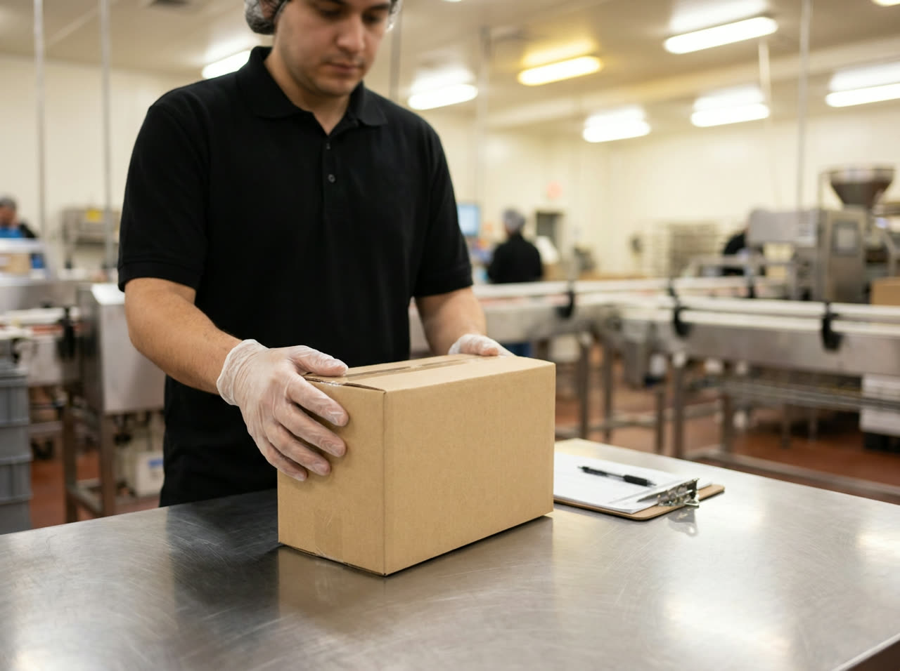
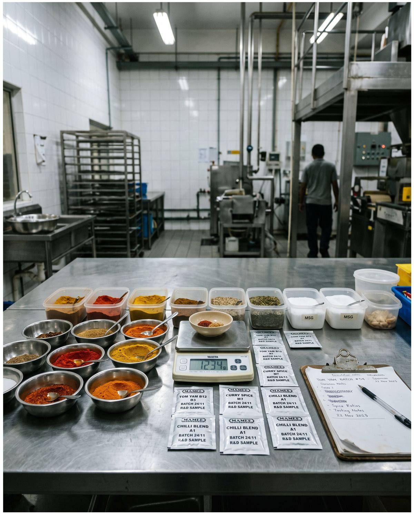

Buyers open with 1 question: can you create a taste like Buldak, like Indomie. The answer is the factory itself. 51 years of noodle mastery, a seasoning kitchen that speaks curry, tom yam, rendang and beyond, and a line that runs your recipe under your label.

Pillow packs, mini packs, zip packs, air-dried kraft, cup on request. Retail 4-packs to 700g economy family packs.

Fried and air-dried lines with export-grade shelf life, stated per SKU on the specification sheet.

FSSC 22000, HACCP, GMP, ISO 22000, and JAKIM halal held since 1980.

Your recipe or ours. Seasoning development, your label, your language, your compliance.
5 cakes, 350 grams, 1 decision. The pack that built the company and still anchors the Malaysian kitchen.
The premium line: white curry, asam laksa and Hokkien mee, cooked from paste, not powder.
Air dried, never fried, coloured by real tomato. The clean spec that wins world lists, made here for years.
Spinach in the noodle, not on the label. High fibre, air dried, the quiet pride of the plant.
Demo build. No payment is taken and no order is placed.